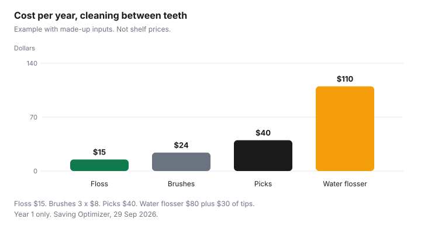

Personal Care · Canada
Water Flossers vs Floss vs Interdental Brushes: Cost per Year
String floss, picks, little brushes, and a water flosser all claim the same gap between teeth. The year is what you buy again, plus a device you might not use. This page prices a made-up year and quotes what the Canadian Dental Association says about cleaning between teeth. It does not rank a brand. Whitening products are the whitening guide. A dentist’s quote is the dental work guide. Nothing here is dental advice.
Key takeaways
- The CDA flossing page says brush at least twice a day, floss daily, and that skipping floss misses more than a third of the tooth surface. Electronic flossers can be used instead of string floss, with their own instructions.
- That page does not rank a water flosser, a pick, or an interdental brush above string floss.
- Example with made-up inputs, year 1: string floss $15, picks $40, interdental brushes $24, water flosser $80 plus $30 of tips, $110.
- Tip replacement follows the booklet. This page does not cite an interval.
- No CDCP line cited here pays for a water flosser. The plan guide excludes whitening, which is a different product, on the whitening guide.
What each does
The Canadian Dental Association’s flossing and brushing page, as of 29 Sep 2026, says that along with a regular dental exam, brushing and flossing are the most important things you can do for dental health. Brush at least twice a day and floss daily to remove plaque.
Floss reaches places the toothbrush does not. If you are not flossing, you are missing more than a third of the tooth surface. The method on that page: a piece about the length of your arm, about two inches to work with, a C shape at the base of the tooth just below the gumline, wiped from base to tip two or three times, both sides of every tooth. Throw the floss in the garbage. Do not flush it.
The same page says dental tape is wider and easier to hold, a plastic floss holder can help, and you can ask a dentist or hygienist to recommend one. It also says there are flossing devices, such as electronic flossers, that can be used in place of traditional floss, each with its own instructions. That sentence is permission to use a different tool. It is not a ranking, and it is not a water-flosser test result. Your dentist can recommend a tool if grip or mobility makes string floss hard. Daily cleaning works with regular visits. The Canadian Dental Care Plan guide is the federal coverage question for those visits, not for a gadget.
Upfront and replacement costs
String floss is a repeating small box. Picks are a repeating box of handles.
Interdental brushes are a box of the sizes you use. A water flosser is a device once, then tips, and sometimes a plug or a charger you should confirm before you buy. This page quotes none of those shelf prices. Example with made-up inputs so the year can be drawn: string floss $15, picks $40, brushes $24, device $80, tips $30. Year 1 for the water flosser is $110. Year 2, if the device still works and you only buy tips, is $30 in that example. If you replace the device, add it again.
A subscription that ships heads or floss on a timer is the Subscribe & Save guide. A shipment you do not use is not a discount. Toothbrush heads are a parallel replacement bill, on the toothbrush head guide. Watch a device listing with the same habit you would use for any other household order. Store-brand string floss is the next section.
Store-brand floss and picks
Compare a store brand when the package prints a length or a count you can divide. Price per metre is the package price divided by the metres.
Price per pick is the price divided by the count. If the box does not print metres or a count, you cannot finish the division in the aisle. The toiletries guide is the wider method: ingredient list, size, and any DIN or NPN. Floss rarely has a DIN. Do not invent one. A flavoured pick you will not use is more expensive than plain floss you will.
No banner’s floss price is copied here. Write the two prices you see and the two lengths. A larger box you will not finish before you lose it is not the cheap option. The example’s $15 string-floss year assumes you buy and use that floss. It is not a Dollarama or a Shoppers price.
Braces and implants considerations
The CDA page does not give a separate product list for braces or implants. It says your dentist can recommend tools, especially when grip or mobility gets in the way, and that technique matters enough to ask.
Braces, implants, and bridges change what fits between teeth. The person who placed them is the person who should say whether a water flosser, a threader, or a brush belongs in that mouth. This page will not assign one.
Cost still has a shape. A device bought for braces and abandoned when the braces come off had a short life. Put the months of use under the price. A tip the booklet says to replace is part of that short life, not an optional extra. Clinical questions about gums, bleeding, or an implant belong on the dental guide and with your dentist. This is not dental advice.
Annual cost
Example with made-up inputs. String floss $15.
Picks $40. Interdental brushes: three boxes at $8, which is $24. Water flosser: $80 plus $30 of tips, $110. The bars are those four. They are not equal, because the arithmetic is not equal. Year 2 of the water flosser in this example drops the $80 if the device still runs, and the comparison tightens. A device that fails in year 1 never gets that second year.
Insurance is unlikely to be the plot twist. This guide does not cite a CDCP benefit that pays for a water flosser. Appendix E of the Dental Benefits Guide is about services the plan will not cover, including whitening, which is a different purchase. A private plan’s booklet is the only yes. The paramedical guide explains maximums and receipts. Until the booklet names the device, pay the $110 yourself, in the example, or the real price in your column.
| Tool | Made-up arithmetic | Year 1 | Your price |
|---|---|---|---|
| String floss | A year of floss at $15 | $15 | |
| Floss picks | A year of picks at $40 | $40 | |
| Interdental brushes | 3 × $8 | $24 | |
| Water flosser | Device $80 + tips $30 | $110 |
| Point on the page | What it says |
|---|---|
| How often | Brush at least twice a day. Floss daily. Both remove plaque. |
| How much surface | If you are not flossing, you miss more than a third of the tooth surface. |
| How to floss | About an arm’s length. C shape under the gumline. Wipe two or three times. Both sides of every tooth. |
| After | Throw floss in the garbage. Do not flush it. |
| Other tools | Dental tape, a plastic holder, or an electronic flosser with its own instructions. Ask your dentist if grip or mobility is hard. |

Sources
- Canadian Dental Association, Flossing and brushing, cda-adc.ca, as of 29 Sep 2026. Twice-daily brushing, daily flossing, more than one-third of the tooth surface, the C-shape method, do not flush floss, electronic flossers may replace string floss and have their own instructions, ask a dentist when grip or mobility is a barrier.
- Canadian Dental Association homepage, as of 29 Sep 2026. Used to reach the public oral-health pages. No product rank is taken from it.
- Canadian Dental Care Plan, Dental Benefits Guide, effective 1 April 2026, as of 29 Sep 2026. Services and exclusions. No water-flosser benefit is cited from it. Whitening is an exclusion, covered on the whitening guide.
- Year-1 dollars are an example with made-up inputs. No shelf price is quoted.
Frequently asked questions
Is a water flosser worth the cost?
It is worth the cost if you will use it and the year of tips is a bill you meant to pay. Example with made-up inputs: a $80 device plus $30 of tips is $110 in year 1, against $15 of string floss. The Canadian Dental Association says electronic flossers can be used in place of traditional floss, with their own instructions, which is not a statement that a water flosser cleans better. If the device stays in the cupboard, the $110 bought nothing you used.
Are interdental brushes better than floss?
The Canadian Dental Association flossing page as of 29 Sep 2026 does not rank brushes against string floss. It says skipping floss misses more than a third of the tooth surface, and it says to ask your dentist or hygienist if you want a different tool, including when grip or mobility is hard. A brush can be the tool you will use. That is a habit, not a clinical ranking from this page.
How often should I replace flosser tips?
Follow the booklet that came with the device; this page does not cite a manufacturer’s week count. In the example with made-up inputs, tips are $30 in the year, and your blank column is the price on the box times the number of tips the booklet tells you to use. A tip you replace early because it frayed is part of the year. A tip you never change is not a saving if you also stop using the device.
Does insurance cover water flossers?
This guide does not cite a Canadian Dental Care Plan line that pays for a water flosser. The plan’s benefits guide covers oral health services and lists exclusions, and a gadget is not one of the services named on the plan pages. An employer plan is a booklet, and the paramedical guide is how maximums and receipts work. Assume it is your money until the booklet says otherwise.
What does the CDA recommend?
On the flossing and brushing page as of 29 Sep 2026, brush at least twice a day and floss daily, because floss removes plaque from places the brush does not reach and skipping it misses more than a third of the tooth surface. Use a piece about as long as your arm, curve it in a C around the tooth, wipe two or three times, and throw used floss in the garbage. Electronic flossers can stand in for string floss if you follow their instructions. Ask your dentist if you need a different tool.
Researched and drafted with AI assistance and fact-checked against official Canadian sources. How we create content.
Disclosure: Amazon.ca storefronts are an offer type. Saving Optimizer may earn a commission if a partner link is added later. No partnership is claimed with Amazon, a salon, a clinic, or a brand. Education only. This page does not name a best product.